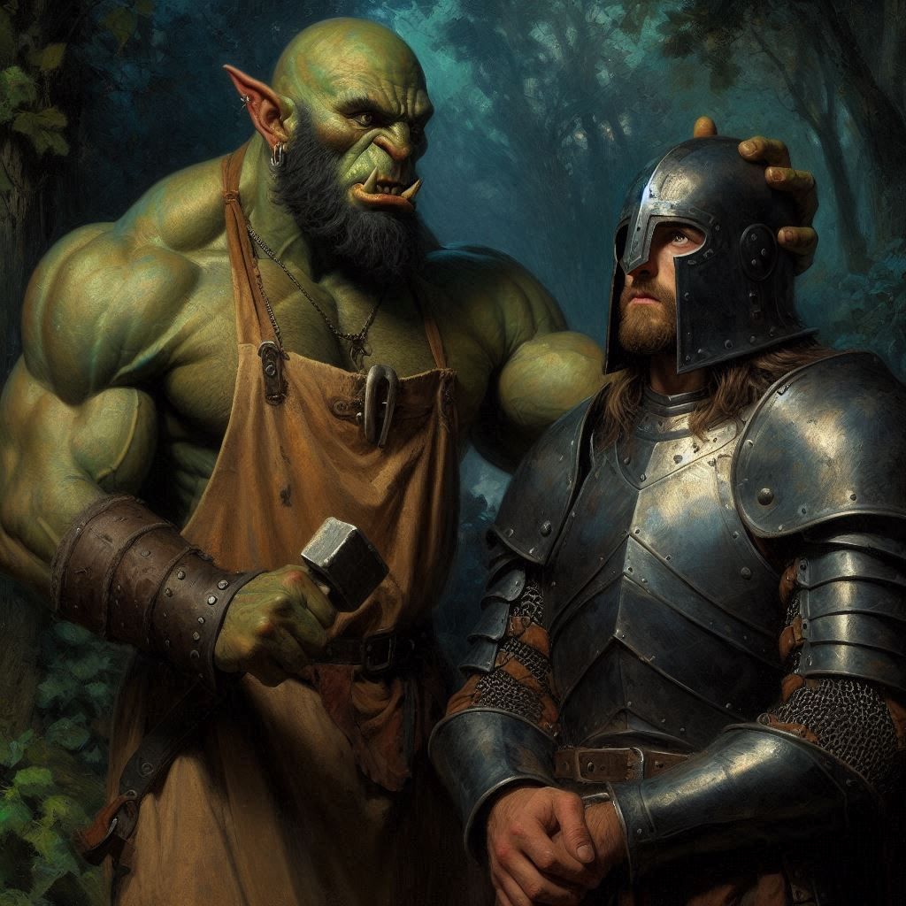

The Mercenary Camp
Baider wanted to slow down and make a plan… at a time like this? Incredulous, you wrapped your wound tightly with a bandage from your pack and started for the hills where you believe you will find the trail to Onyx’s captors. Tracking is an art and a science, but time is always of the essence. You need to move fast if you don’t want to lose their scent.
The forest presses in around you, shadows deepening as you race through the undergrowth. Your side still aches where the mercenary’s blade caught you, but you push the pain aside. Onyx is out there—captured by Varis’s men, and you can’t let him die because of you.
Baider follows close behind, his heavy footfalls a comforting reminder that you’re not entirely alone. But you can feel his unease, the tension in every step. He wanted to take the cautious route, to regroup and plan, but there’s no time. If Varis gets what he wants—if the ritual begins—it will be too late.
Ahead, the flicker of firelight breaks through the darkness. You slow your pace, crouching behind a cluster of bushes. Baider silently joins you, his breathing controlled but his eyes burning with the same determination you feel. There, just beyond the clearing, you see them—the Trade mercenaries. They’ve set up a makeshift camp, and in the center, bound and bruised, is Onyx.
You swallow the surge of guilt, trying to steady your racing heart. Varis isn’t here, but his presence hangs over the camp like a heavy cloud. The mercenaries are preparing for something, their movements tense, their weapons sharp. You overhear snippets of conversation, words that send a chill through your spine—sacrifice, Yaldaboath, Hemlock Caverns. Varis is planning to summon the demon, and Onyx is his key.
As you peer closer, a figure shifts near the edge of the camp—someone cloaked in shadows, moving with an eerie grace. For a moment, you think it’s another mercenary. But then he steps into the firelight, and your heart skips a beat.
It’s Jorsh.
You knew he was out there, somewhere in the chaos of Varis’s schemes, but seeing him now—his face set in a mask of anger, his eyes burning with a familiar intensity—it’s like a punch to the gut. He’s following the same trail you are, hunting Varis with a single-mindedness that scares you.
You want to call out to him, to demand answers, but the words catch in your throat. Jorsh’s path isn’t yours anymore. His quest for vengeance has taken him to a place you’re not sure you can follow.
As you watch, Jorsh slips closer to the mercenaries, silent as a shadow. You feel Baider’s hand on your shoulder, holding you back. “We need to be careful,” he whispers, his voice low and gruff. “This isn’t our fight right now. We need to get Onyx and get out.”
But you can’t tear your eyes away from Jorsh. He’s dangerous, yes, but he’s also right. Varis has to be stopped, and Jorsh might be the only one ruthless enough to do it. Your heart pounds with the weight of your conflicting loyalties.
Just then, a rustling sound catches your attention—a mercenary is moving toward you. You tense, reaching for your dagger. In a split second, Baider lunges forward, knocking the man unconscious with a well-aimed strike. You grab the mercenary’s collar, dragging him behind the bushes.
“He might know something,” you mutter, your voice tight as you tie the man’s hands. When he groggily opens his eyes, you press your blade against his throat. “Talk.”
He’s terrified—too terrified to lie. Between gasps, he spills everything: Varis’s plan to use Onyx as a sacrifice to summon Yaldaboath, the demon of the shadows. And more importantly, he tells you about Hemlock Caverns—the ancient place of dark magic where Varis plans to perform the ritual. It’s a place filled with dangers far worse than Varis’s mercenaries.
Baider crouches beside you, his expression grim. “We can’t let this happen. We need to rescue Onyx now before Varis gets any closer to those caverns.”
You nod, but your mind is racing. If Varis performs the ritual, all of Belladonna could fall under the shadow of Yaldaboath. Stopping him might mean confronting him directly, and Jorsh could be an ally—if you can trust him.
Baider’s voice snaps you out of your thoughts. “What’s it gonna be, Kira? We don’t have much time.”
You look toward the camp, where Onyx is bound and helpless. Then, you glance at the shadows where Jorsh disappeared, knowing that following him could change everything.